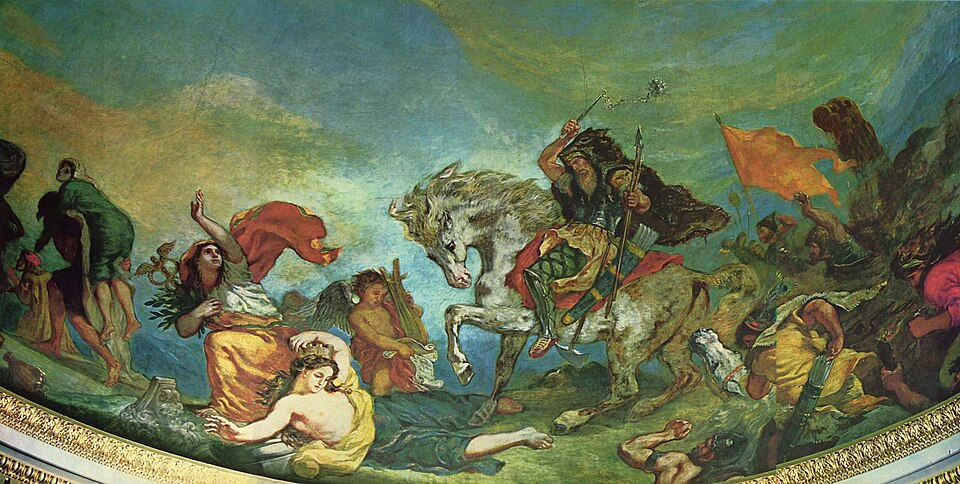

Scourge of God
The chroniclers wrote that the grass never grew where his horse had trod — and he has come west again to prove them right about everything.

Scourge of God
The chroniclers wrote that the grass never grew where his horse had trod — and he has come west again to prove them right about everything.
Feature map
Level-by-level features, as the figure refined them.
The Tread
Passive.
Tier III · Brute · Suggested CE ability: STR · Primary verb: Trample Your technique save DC = 8 + your proficiency bonus + your STR modifier. "Cursed ground" means difficult terrain created by your technique: it hinders your enemies but never you or your willing allies. A charge means moving at least 20 ft in a straight line toward a hostile creature immediately before attacking it.
Passive. You are the ground's enemy and its master: - Cursed ground you create never counts as difficult terrain for you. - When you charge, your first melee attack that turn deals an extra 1d8 damage (the momentum). - Scorched Step: spaces you move through during your turn become cursed ground (difficult terrain for your enemies) until the end of your next turn. The grass dies where your horse — or your boots — pass.
Scourge's Wake & Trample
Scourge's Wake — Bonus action · 2 CE.
Scourge's Wake — Bonus action · 2 CE. The dead ground spreads: a 15-ft-radius around you becomes cursed ground for 1 minute. Your enemies wade. You ride. Trample (passive). While charging, you may move through a hostile creature's space. That creature must make a STR save or take 2d6 bludgeoning damage and be knocked prone. On a success, it takes half damage and is not prone. (You cannot end your move in its space.)
Break the Walls
Action · 4 CE.
Action · 4 CE. The shock charge. Move up to your speed in a straight line — you may pass through hostile spaces (Trample applies to each, once per creature) and you do not provoke opportunity attacks during this movement. Each hostile creature you pass within 5 ft of must make a DEX save or take 4d6 bludgeoning damage and be pushed 10 ft away from your path (half damage on success, no push). Against structures, fortifications, and barriers, roll this damage twice and use the higher total — walls are what you are for (invented implementation).
The Horde Answers
Bonus action · 5 CE.
Bonus action · 5 CE. You sound the horn the steppe remembers. For 1 minute, willing allies within 30 ft of you gain +10 ft speed and +2 to damage rolls (the horde's momentum), and your charge bonus increases to +2d8. Spectral riders flicker at the edges of vision — the dead keeping pace. (They are atmosphere, not combatants; the buff is the mechanic.)
Maximum, Domain, or equivalent.
Capstone material.
Flagellum Dei (Maximum)
Action · 8 CE. The great charge. You move up to 60 ft in a straight line, passing through hostile spaces without provoking opportunity attacks. Each hostile creature within 10 ft of your path must make a STR save or take 8d6 bludgeoning damage and be knocked prone (half damage on success, not prone). The ground along your path becomes cursed ground for 1 hour — and this time, it does not fade: only hallow, wish-level cleansing, or the deliberate tending of the land removes it. The General's surveyors will find this line on maps for years.
The Grass Never Grows Back
Capstone. The chroniclers were right, permanently: - Your Scorched Step and Scourge's Wake now leave permanent cursed ground (removed only as Flagellum Dei's, above). You are terraforming the world one ride at a time. - Once per combat, when you reduce a hostile creature to 0 HP with a charge attack, you may immediately move up to half your speed (it must be a straight line toward another hostile) and make one melee attack against a creature you reach. The ride continues.
Build-defining options.
Historical-figure techniques grant no feats — the figure's art is complete as written, and the builder's feat picker excludes these techniques. Take the progression as the build.